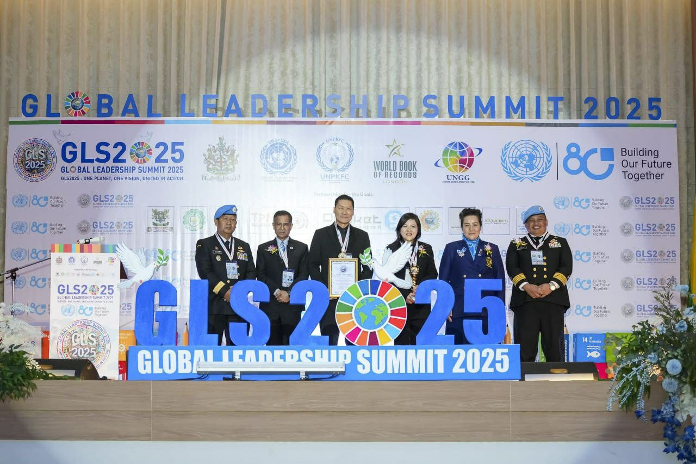

"Their story is one of faith activated by action — of leaders who not only speak of a better world, but who build it."
— Exquisite International MagazineThe Story
Eagles That Soar Above the Storm
In a world that often measures success by material gain, Shekinaih Siew Sin Yap and J Aaron K David have charted a different course — one guided by faith, defined by service, and celebrated on the world stage. As co-founders of Crowned Eagles Global, they have built a platform that reaches thousands across Singapore and the globe, transforming lives through prophetic ministry, humanitarian outreach, and kingdom-principled leadership.
Their journey is not one of overnight success, but of consecrated purpose — forged in prayer, refined through adversity, and ultimately vindicated by the impact they have made in communities across Asia, India, and beyond. It is a story that Exquisite International Magazine was honoured to place at the centre of its pages as a full cover story.

International Recognition
Honoured at the United Nations' 80th Anniversary Summit
The defining moment of 2025 came when Shekinaih and Aaron received the Global Leadership Achievement Award at the Global Leadership Summit in Bangkok — an event held in celebration of the United Nations' 80th Anniversary. Presented at the prestigious Kantarat Auditorium before an audience of global dignitaries, diplomats, and leaders, this recognition affirmed what their community had long known: that their work carries significance that transcends borders and belief systems.
The award was presented by three international organisations simultaneously — a rare and extraordinary honour that speaks to the multi-dimensional nature of their influence and the universal respect they have earned on the world stage.
"Recognised by the World Book of Records London, UNPKFC, and the Global Leadership Summit — their story stands as a testament to the extraordinary impact of principled, faith-driven leadership on our world."
Awards & Honours
A Legacy Written in Service
- Global Leadership Achievement Award 2025 — Global Leadership Summit, Bangkok, Thailand. Presented at the United Nations 80th Anniversary Summit.
- Distinguished Emblem — Positive Social Development — United Peace Keepers Federal Council (UNPKFC). Certificate of Honor recognising dedication to fostering positive social impact.
- Global Diplomacy Ambassador Awards — DMGP Global Diplomacy, Mumbai, India. Recognising exceptional commitment to international diplomacy and cross-cultural understanding.
- World Book of Records Recognition — London, United Kingdom. Acknowledging their outstanding contribution to humanitarian leadership at a global scale.
- Cover Story — Exquisite International Magazine — A prestigious publication celebrating outstanding global leaders, changemakers, and humanitarian champions.

Ministry & Mission
Built on a Foundation That Cannot Shake
Crowned Eagles Global was founded with a singular conviction: that Isaiah 61 was not merely a passage of scripture but a blueprint for ministry. "The Spirit of the LORD is upon me; because He hath anointed me to preach good tidings unto the meek, to proclaim liberty to the captives." That verse became the heartbeat of an organisation that now touches lives weekly through prophetic teaching, intercessory prayer, and compassionate outreach.
From their base in Singapore, Shekinaih and Aaron have extended their reach through digital platforms — a Telegram Heaven Broadcast Channel, YouTube, Facebook, and Instagram — creating a daily flow of prophetic messages and divine insights that sustains a global community of believers. Their weekly broadcasts, archived from 2020 through 2026, serve as a growing library of faith, guidance, and biblical wisdom for thousands around the world.
A Vision for the Future
Eagles Rising — The Next Chapter
What makes the story of Shekinaih and Aaron so compelling is not only what they have accomplished, but what they are building toward. With a global network now in place, and an international profile that continues to grow, Crowned Eagles Global stands at the threshold of its next great season.
Their vision is clear: a world in which the principles of the Kingdom — healing, liberty, justice, and transformation — are not confined to church walls, but expressed in communities, diplomacy, business, and the public square. It is a vision that has already begun to take shape, one life, one city, one nation at a time.
"They that wait upon the LORD shall renew their strength; they shall mount up with wings as eagles."
— Isaiah 40:31 · The foundation of Crowned Eagles Global